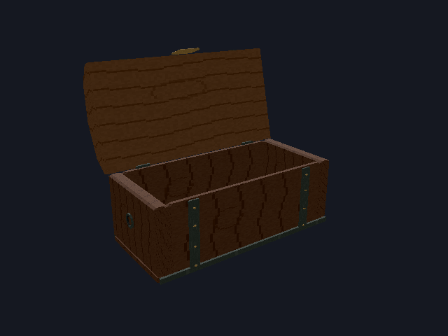
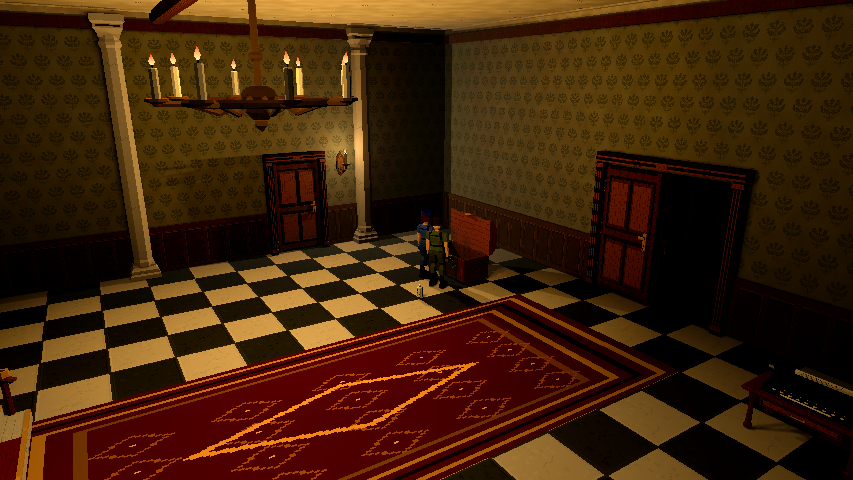

Animações do baú e interação de frente · 15/10/2026
Etapa 2 posterior: o baú do hall foi removido e sua máquina/móvel foi
reposicionada à esquerda da escadaria. Restam os baús de medicine e saveeast. As contagens de três baús,
capturas e resultados abaixo preservam a rodada anterior à remoção.
Layout atual e compatibilidade de saves.
Complemento posterior: o alcance curto foi estendido aos demais objetos por
InteractionGeometry, compartilhado entre UI/Core. Critérios e nova rodada.
As medições e logs das rodadas abaixo permanecem históricos.
Alcance curto · ajuste de 15/10
Corrigido o acesso de longe: antes, a UI e o servidor aceitavam até 2,2 unidades
do centro do baú. Agora exigem até 0,65 unidade entre a posição do personagem
e a borda do móvel, respeitando seu footprint e a orientação frontal.
O mesmo helper Geometry.ChestInReach limita a abertura, manutenção da sessão,
conteúdo enviado no snapshot e depósito/retirada. Afastar-se cancela o acesso.
Dimensões, colisões, capacidade, clipes/SFX, protocolo 2 e schema 3 preservados.
O teste de reprodução confirmou a abertura indevida a duas unidades de distância
(Build/chest-reach-reproduction.log). A regressão cobre os três baús e as quatro
faces, pontos próximos/distas do limite, recusa de transferências e cancelamento.
Rodada e limites atuais em Testes; os números abaixo
da implementação inicial permanecem como evidência anterior ao ajuste de alcance.
Rodada do alcance: 107 CoreTests, 16 checks Python, build sem erros/avisos e
importação Godot aprovados; 138 checks App solo/host/cliente ENet local,
53 da matriz ENet (concorrência/reconexão/restore) e smoke de quatro clientes
por 35 s aprovados. Capturas de longe/perto conferidas no engine. Logs
Build/chest-reach-*; patch auditado contra a baseline desta tarefa.
Sem controles físicos, Internet ou audição crítica. A primeira tentativa de
validar os documentos encontrou uma referência C0 ainda em criação por outra
frente; a conferência foi repetida após esse arquivo ficar disponível.
Fluxo das animações
E no baú solicita sua abertura ao servidor. Durante os 1,1 segundo de abertura, o personagem que interagiu permanece imóvel, sem mirar/atacar, e a HUD aguarda a tampa terminar. A cena continua visível. Esc cancela essa espera.
Ao fechar a HUD por SAIR, Esc ou I/Tab, o personagem fica livre imediatamente e a tampa fecha em 0,8 segundo. No solo, a simulação continua durante as duas animações; pausa/desfoque/abafamento só começam ao abrir a HUD.
No cooperativo, a simulação, outros jogadores, inimigos e relógio continuam ativos durante abertura, uso e fechamento. Dois usuários do mesmo baú compartilham a tampa: sair de uma HUD libera seu personagem, mas o fechamento aguarda o último usuário. Reabrir durante o fechamento inverte o movimento a partir da posição atual. Baús de salas diferentes têm tampas independentes e conservam o conteúdo coletivo.
Regra de orientação
Interações exigem alvo à frente do personagem, dentro de 60° para cada lado. De costas ou de lado, E não oferece o objeto e comandos equivalentes são recusados pelo servidor. Vale para baús, portas, itens coletáveis, puzzles, máquina de escrever, socorro e inspeções de objetos/janelas/corpos. Não há rotação automática do personagem. Itens sobre a posição exata do personagem não têm direção horizontal definida.
Implementação e arte
Core/ChestAccess.cs mantém sessões e progresso efêmeros; snapshots transportam
ChestView, PlayerView.ChestId e ChestReady. O bloqueio também existe em
Geometry.Move, usado pela autoridade e pela predição. ChestInteraction aguarda
confirmação, cria a HUD somente ao terminar e cancela espera por dano, interrupção,
mudança de época, perda de proximidade ou desconexão. Restore não reabre a HUD.
Fechar é idempotente, respeita Epoch/Sequence e permanece possível após um burst
que atinja o limite dos comandos normais. Transferências preservam slots, versões,
capacidade e atomicidade.
O protocolo de rede passa a 2; use clientes e servidor desta mesma revisão.
Schema de save permanece 3: sessões e tampas não são persistidas, sem migração
ou recriação de kits. Geometry.Faces, GameUi.Nearby e InteractionFacing
compartilham a regra frontal; inspeções continuam sendo apresentação local.
Tools/generate_assets.py --chest regenera o GLB original: corpo oco, tampa,
dobradiça traseira e clipes chest_open/chest_close. Madeira, ferragens,
silhueta facetada e texturas originais de 64 pixels/nearest preservadas.
Assets/Models/chest-art-manifest.json registra fonte, modelo, clipes e hashes.
Não é item carregável; não há miniatura de inventário para rebake.
Os SFX chest_open/chest_close já integrados acompanham a tampa no cenário,
inclusive para observadores, sem novos arquivos sonoros ou síntese.


Vista traseira, abertura no saguão, enfermaria e sala segura leste. As vistas isoladas do modelo usam câmera/luz de conferência; as demais preservam as câmeras de produção. Não houve alteração de câmera, teto ou iluminação do jogo.


Reprodução e evidências
dotnet build OperationSpencer.csproj -c Debug
& $env:GODOT_DOTNET --headless --path . --editor --import --quit
& $env:GODOT_DOTNET --path . res://Tools/ChestAnimationAcceptance.tscn -- --offline --new --profile chest-animation --campaign chest-animation --campaigns-root "$PWD/Build/chest-animation-2026-10-15/campaigns/App"
Logs em Build/chest-animation-*; capturas em Build/chest-animation-2026-10-15/.
Resultados finais e limitações são registrados em Testes.
Na rodada final: 123 checks no App solo/host/cliente ENet, 72 de regressão
do baú, 102 CoreTests, 16 checks Python, build sem erros/avisos e importação
Godot 4.7.2 .NET aprovados. Matriz ENet: 53 checks, incluindo concorrência,
reconexão e restore; smoke real de quatro clientes por 35 s aprovado, logs limpos.
Foram conferidos sete tipos de alvo na UI, nove comandos no Core, oito vistas
do GLB e os três baús em câmeras de produção. Documentação: MkDocs estrito,
hashes, recursos e âncoras locais aprovados; página e imagens revisadas no navegador.
Fixtures usam input sintético e ENet local. Não executados teclado/mouse físicos,
Internet, audição crítica ou profiling; esses testes não homologam todo o multiplayer.
Ajustes das fixtures e limites da rodada
Tentativas intermediárias expuseram preparação antiga de testes: o peer isolado
precisava do caminho RPC Main/Net; comparar yaw com igualdade exata falhou por
normalização de float; uma única amostra de input UDP não representava movimento
mantido, e o observador passou a usar o comando confiável de giro. Após a regra
frontal, participantes sobrepostos eram afastados pela colisão e ficavam de costas
para a coleta concorrente; agora ocupam posições distintas e olham para o alvo.
Nenhuma dessas adaptações gira personagens automaticamente no produto.
Os três baús da rodada histórica ficavam em salas seguras. O Core testa interrupção por dano numa cópia de cenário explicitamente sem segurança, enquanto o aplicativo testa interrupção de ação e limpeza de sessão/pose ao perder o servidor. Não é uma mudança nas regras ou dados das salas de produção.